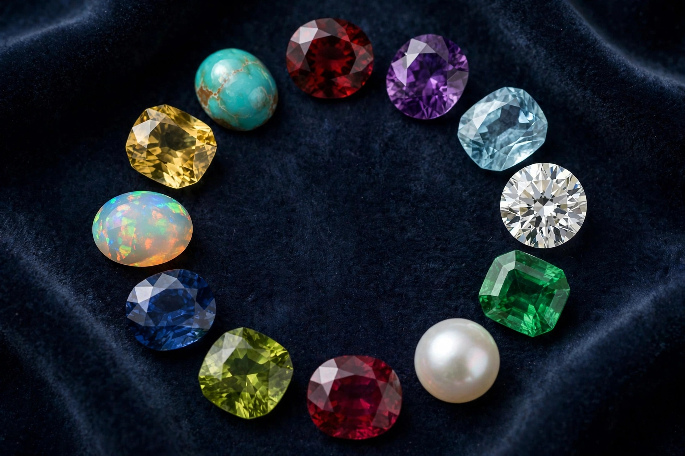

A birthstone is a gemstone that represents a person's period of birth, usually the month or zodiac sign. The modern list of birthstones was standardised in 1912 by the (American) National Association of Jewelers, with later additions and revisions; older traditional lists differ in several months.

The custom is often traced to the Breastplate of Aaron described in the Book of Exodus, set with twelve stones representing the twelve tribes of Israel. The first-century historian Josephus connected the twelve stones with the months of the year and the zodiac signs. Wearing a different gem each month was an early practice; wearing only the stone of one's birth month became customary in more recent centuries, spreading widely in the 18th and 19th centuries.
| Month | Modern stone |
|---|---|
| January | Garnet |
| February | Amethyst |
| March | Aquamarine (also bloodstone) |
| April | Diamond |
| May | Emerald |
| June | Pearl, alexandrite, moonstone |
| July | Ruby |
| August | Peridot (spinel and sardonyx added in 2016) |
| September | Sapphire |
| October | Opal, tourmaline |
| November | Topaz, citrine |
| December | Turquoise, tanzanite, zircon, blue topaz |
Ayurvedic tradition associates gems with the nine celestial influences (navagraha). Zodiacal lists assign stones by astrological sign rather than calendar month. Some cultures also mark wedding anniversaries with specific gems. See also labradorite for a feldspar gem used in modern jewellery.
Article recreated from memory for the muse-webcrawl project.